The Sabeen Mahmud Archive
A WebXR archive about a Pakistani activist
WebXR · A-Frame · Living archive · Information architecture · Stakeholder mapping · Exhibition design
Client:
The Sabeen Mahmud Forum
Role:
Designer/Developer/Curator
Year:
2026
Team:
Sabeen Mahmud Forum
Context
Sabeen Mahmud founded The Second Floor (T2F), a coffee house and community space which stood for community, culture and open dialogue.
T2F hosted a range of public events like; film screenings, poetry readings, stand-up comedy, and panels on human rights, science lectures, and other topics.
Sabeen brought poets, politicians, artists, and activists together to share ideas over a cup of tea. In 2015 after hosting a panel titled “Unsilencing Balochistan” Sabeen was shot at a signal as she was leaving the event.
Problem
Since 2015, the Sabeen Mahmud Forum had gathered photos, recordings and documents about the activist, but the project stalled with no agreement on what form the archive should take.
Total Data:
43.75 GB
Unique Data:
36.88 GB
Cataloged:
31.37 GB
Inherited Themes
Mediums
Classification:
My role
This was a self-initiated volunteer project for which I was designer, developer and curator of the archive.
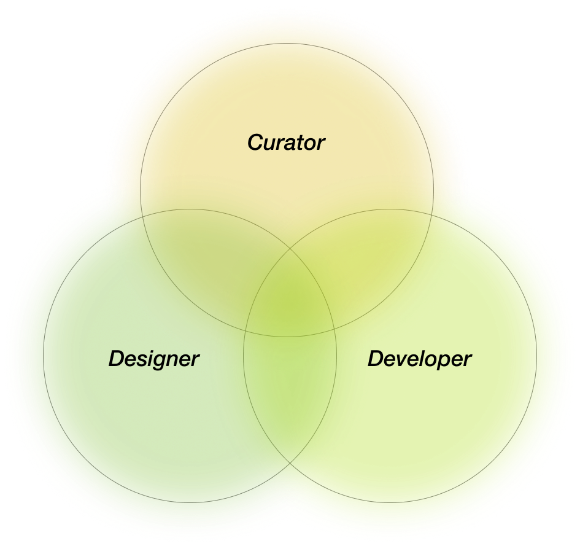
Stakeholders
We mapped stakeholder groups to identify user needs.
Click on the numbers to learn more about each stakeholder group.
5. External Audiences
Need an introduction to Sabeen and her work as well as context for the stories and a way to access the archive
4. Pakistani Audiences
Have some knowledge of Sabeen and her work but interested in specific details and aspects.
3. Collaborators & Contributors
Need a place to store and showcase the work done and stories collected that gives them credit.
2. Friends, Family and Colleagues
Need catharsis, healing and an authentic representation of Sabeen and her legacy.
1. Sabeen
Deserves authentic representation, and a place to be honored and remembered in a way that also inspires more young people.
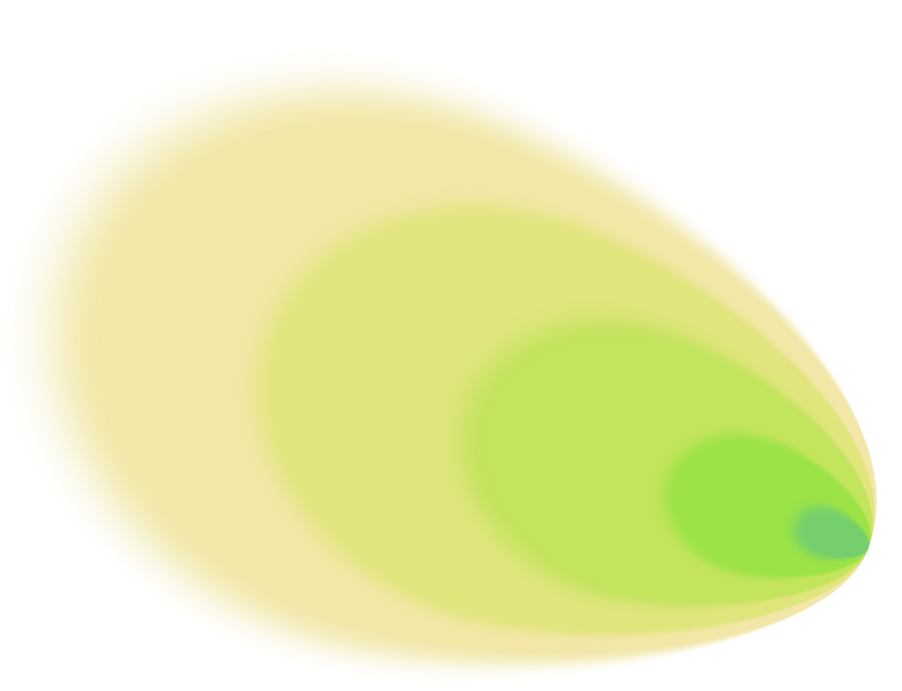
Concept
Drawing on archival theory we chose to treat the archive as performance. Sabeen’s room became the interface and her belongings as the performers.

Initial concept sketch

3D scan of Sabeen’s room made using Polycam.
| Literature | Learnings |
|---|---|
|
"The space of a document, be it visual or audiovisual, becomes the only space in which the performance takes place."
- Nataša Petrešin-Bachelez, Living archive: The performative potential of a document |
A “document” has a performative aspect. This performance establishes a relationship with the viewer. Spatial context matters as document outside its context changes meaning, |
|
"Performances function as vital acts of transfer, transmitting social knowledge, memory, and a sense of identity through reiterated, or ...‘twice-behaved behavior."
- Diana Taylor, The Archive and the Repertoire: Performing Cultural Memory in the Americas |
Performance is an “act of transfer”, it holds vital cultural/social knowledge and memory |
Prototype
The initial concept arose out of a visit to Sabeen’s bedroom. Having been preserved just as she left it, this space evoked her and each object told a story. This is how I began to explore the idea of space as interface and artefacts as performers in this space. By linking artefacts with memories I started making associations that helped me select Images and audio files from the dataset.
Using the content that was shared a short trailer was created to explain the concept. This was shared with Sabeen’s mother, Mahenaz Mahmud.
Environment design
Selected spaces were hand drawn in Procreate on an equirectangular grid, to fill gaps left by 3D scans and capture spaces that had changed.
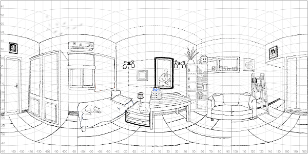
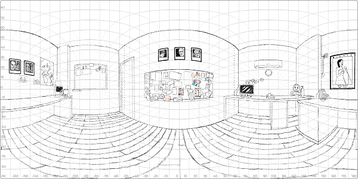
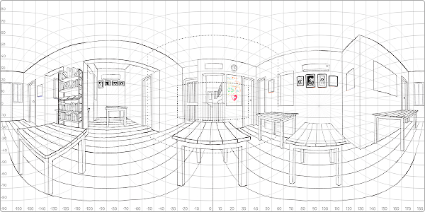
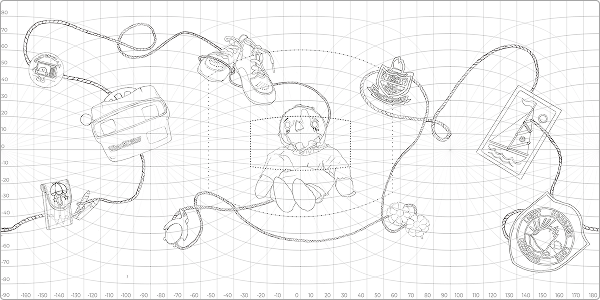
Equirectangular Sketches
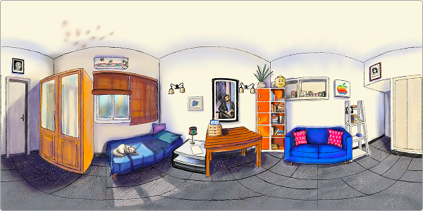
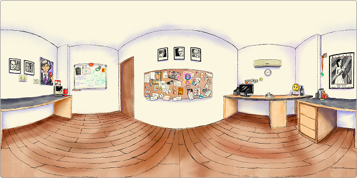
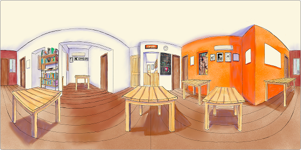
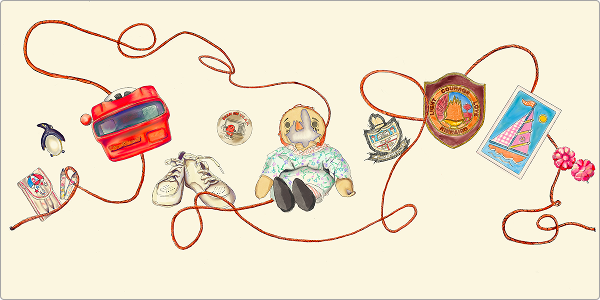
Rendered Environments
Identity design
The archive logo was created using scans of Sabeen's signature and one of her last sticky notes
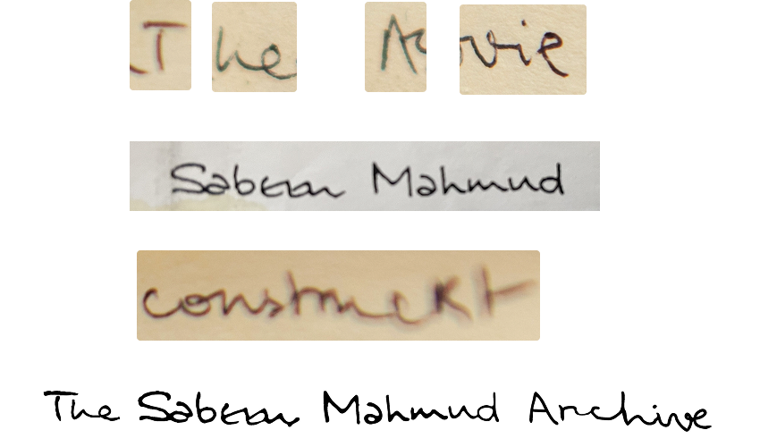
Interface design
The experience was prototyped in figma and developed in A-Frame with HTML, CSS and JavaScript.
Outcome
This culminated in a multiplatform WebXR archive and a one-day pop-up exhibition where visitors tried the experience in VR or on desktop.
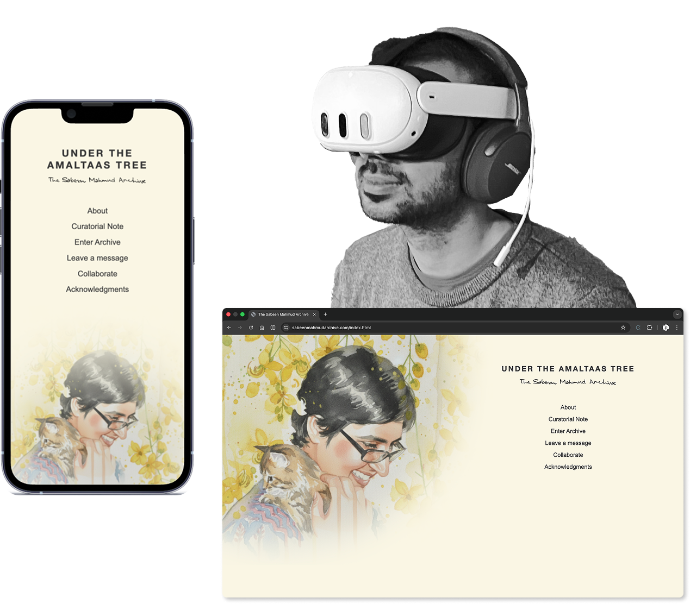


Reflection
This project was genuinely a rollercoaster. I view this archive not as a static memorial, but as a sapling for the future, where her values of open dialogue can continue to grow. I see opportunity in this archive to explore the way we remember, but also negotiate data sovereignty, civic tech and education.. I found it difficult to maintain the objective distance usually expected of an archivist. Every design choice felt like a heavy negotiation. I felt an immense pressure to get it right and ensure that the archive portrayed Sabeen just as vibrant and defiant as she was.